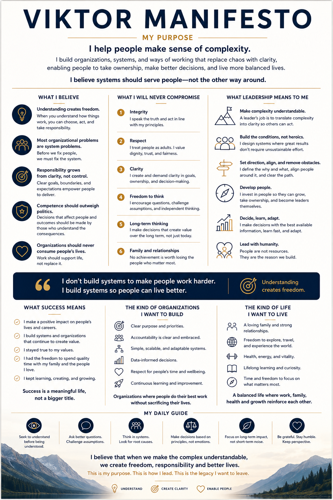

01
Leadership clarity
Translate a difficult situation into the decision, direction and next conversation that actually matter.
Mentoring
A practical mentoring space for engineering leaders and managers who want to lead with more clarity, ownership and confidence.
Bring a real leadership situation. We will turn it into clearer choices, a useful next conversation and practical next actions.

01
Translate a difficult situation into the decision, direction and next conversation that actually matter.
02
Explore ownership, team boundaries, roles, interfaces and decision rights as one connected system.
03
Build better conditions for delivery without depending on heroics, invisible work or constant escalation.
Intro
A short conversation to understand the situation and whether mentoring is the right fit.
One-off
Focused support around one concrete leadership question or decision. EUR 100–200 per session, depending on the request and topic.
Regular
A compact programme for a situation that benefits from reflection and follow-through. EUR 400 for the full programme.
Sessions are online, in English or Russian, and treated as confidential.
Before a paid session
Before confirming a paid session, you will answer a few questions about the situation, context and outcome you want. This helps determine whether a one-off session or the regular programme is the better fit and confirms the price in advance.
In your first email, include the situation, the outcome you want and your preferred language. The next step is a free 15-minute intro call.
A focused conversation, a concrete situation and a small number of useful next actions. Mentoring is shaped around your context — not a fixed playbook.
We keep the work practical: understand the system, challenge assumptions, choose a direction and learn from what happens next.
The first step is a short conversation about the challenge you are carrying now.